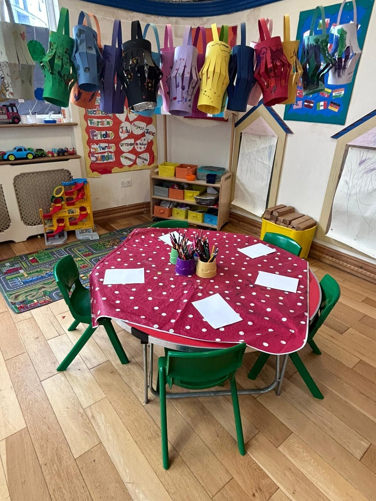

A Typical Day at The Ark
Our daily rhythm balances structured focus with natural play, outdoor movement, and organic meal times.
🌅 Morning Arrival & Breakfast
Gentle arrival, morning greetings, handwashing, and a nutritious light organic breakfast to start the day peacefully.
🧩 Uninterrupted Work Cycle
Children freely choose purposeful work with wooden sensorial apparatus, practical life pouring, math rods, and phonics.
📖 Circle Time & Storytelling
Group singing, rhythm games, phonics sound play, and interactive storytelling in our cozy reading corner.
🍎 Organic Lunch & Etiquette
Children set their own placemats, serve food with care, practice social grace, and clear their dishes afterwards.
🌿 Outdoor Garden Exploration
Gardening with watering cans, nature mud kitchen play, climbing, sand pit exploration, and fresh air movement.
🎨 After-Nursery Creative Club
Relaxed afternoon activities, clay sculpting, free drawing, light afternoon tea, and gentle family collection.
Nurturing Independence Every Day
Children flourish when given structure, gentle expectations, and autonomy. From self-serving snack routines to putting on coats and shoes, our daily flow reinforces confidence and pride in accomplishment.
We work in close partnership with parents, providing regular observations, photos, and developmental updates.
